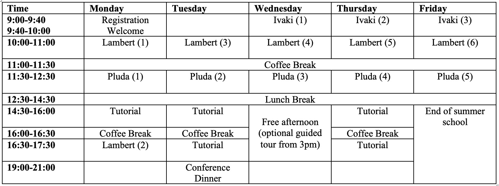
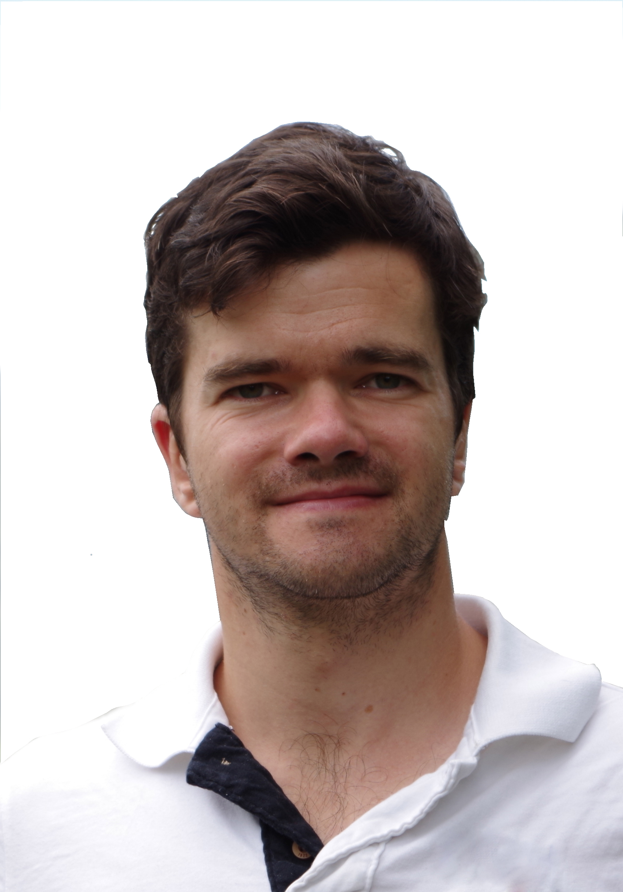

Venue
Abacws Building, Seminar room 302
Senghennydd Road
Cardiff CF24 4AG
Wales
Map
Location Guide
Practical information during the school
Accommodation: The very most of you are accommodated at
Senghennydd Court
Cardiff University
Salisbury Road
Cardiff
CF24 4DS
Location Guide
House N
{kind=link}
{kind=link}
- Check-in begins at 3 PM, and check-out time is 10 AM. You'll be staying in House N, also known as Newton House, which is accurately marked on the map for easy location (click the "location guide" link)
- Arrival instructions:
- By car: Follow the pink road marked on the map to reach the reception.
- On foot: Enter the accommodation area via the black gate on Salisbury Road.
- Reception hours:
- Monday to Friday: 08:00 – 21:45
- Weekends and bank holidays: 09:00 – 21:45
- Outside these hours, please contact Security on +44 (0)29 2087 4444
- Reception Tel: +44 (0)29 2087 5709
- If you have any trouble finding your way, reception staff will be happy to assist you. You can also contact security at the provided number if needed.
- Luggage storage: No storage available at reception. On Friday (check-out day for most), attendees can bring their luggage to Abacws.
Breakfast is served from 7:30 to 9:00 at Trevithick Restaurant, Trevithick Building 5, Off The Parade, Newport Rd, Cardiff CF24 3AA. On the first day (Monday), Prachi will be around at the accommodation reception on Monday morning to show you the way. Departure 7:45 on the nose.
Conference dinner Tuesday 23rd, 7pm at Henry's Cafe Bar, Park Pl, Cardiff. Either be there at 7pm, or walk with Prachi from the accommodation reception at 18:30.
For every other dinner, you will be reimbursed max. 10 GBP after the conference, provided you collect receipts of your expenses.
Excursion: On Wednesday afternoon, there will be an excursion in form of a guided city tour through Cardiff, which lasts roughly 2 hours, starting at 3pm. Participation is of course optional. We depart from Abacws building at 14:40.
About the Research School (Poster)
The field of geometric flows is a highly active research area located in the intersection of partial differential equations (PDE), differential geometry and convex geometry. The most prominent prototype equations are the mean curvature flow and the Ricci flow, the latter being the main key to the so far only solution of a Millennium problem listed by the Clay institute, the so-called Poincaré conjecture, which was solved by Perelman building upon ideas of Hamilton.
These geometric equations are fully nonlinear systems and the PDE theory required to rigorously understand their details is in the most cases much deeper than what is taught in undergraduate PDE courses. They comprise results from regularity theory for fully nonlinear (elliptic and parabolic) PDE, advanced results from functional analysis and operators on manifolds.
Contrary to what is usually covered in research schools on geometric flows, this school is supposed to focus on the PDE aspects of geometric flows, which is often considered as technical and therefore neglected. Our PDE expert lecturer Dr. Ben Lambert aims to make this material as accessible as possible and the theory will be accompanied by their application to the curvature flow equations, delivered by Prof. Alessandra Pluda. Additional guest lectures with further applications to geometry will be held by Prof. Mohammad N. Ivaki.
This research school is well-suited for research students roughly at PhD level and for early career researchers working in one or both of the fields of PDE and Differential Geometry. In particular, anyone working with PDE is encouraged to apply, even if their work is not related to geometric flows.
Lecturers
- Prof. Alessandra Pluda from the University of Pisa will give lectures on Curvature Flows.
- Dr. Ben Lambert from the University of Leeds will give lectures on PDE.
- Prof. Mohammad N. Ivaki from TU Vienna will give two guest lectures on flows in convex geometry.
Programme
Here is a tentative programme outline, which might still undergo few adjustments.
Some recommended literature
For those who want to read a bit in advance of the school, the following texts might be helpful, especially for those with little or no PDE background. None of this is mandatory, but it might help you to have a smooth start into the school.
- Gilbarg/Trudinger, Elliptic partial differential equations of second order: Up to Chapter 6.
- Some old lecture notes of mine. This is on general PDE stuff (Sections 2 and 4 are the most relevant).
- Andrews/Chow/Guenther/Langford, Extrinsic geometric flows: The first bit about the heat equation is particularly interesting and then go as far as you can get.
Fees and financial support
The following registration fees apply.
- Research students: £150. There will be no charge for subsistence costs.
- Early career researchers (within 5 years since PhD): £250. There will be no charge for subsistence costs.
- Other participants: £250 plus the full subsistence costs (£450), £700 in total.
- All participants are expected to pay their own travel costs. Upon participant selection, there will be an option to apply for financial aid towards the registration fee and/or travel costs.
- Fees are not payable until a place on the course is offered but will be due by 14/06/2024.
How to apply
The selection criteria upon which participants will be selected are
- Mathematical ability;
- Fit of the applicant's research interests to the subjects of the research school;
- Some experience with the topic, at least at undergraduate level (for example completion of an introductory PDE course).
In order to apply, please provide the following documents no later than the application deadline: April 7th, 2024 to scheuer@math.uni-frankfurt.de.
- Fill in the application form;
- Cover letter: Please explain the reasons for your interest in the summer school and its relation to your work;
- An up to date CV, including academic qualifications.
- Evidence of academic quality, for example a transcript of records;
- One letter of recommendation from a referee, for example your supervisor, one of your lecturers, etc. This letter should be sent to scheuer@math.uni-frankfurt.de by the application deadline.
Important: In the application form you have the chance to indicate whether you would like to apply for financial support. After the selection of participants and in case you are selected, you will be asked to provide details demonstrating your need for financial support.
For international applicants, please find out about your visa requirements to enter the UK and make sure that you apply for your visa as early as possible, if applicable. Upon request, we can provide supporting statements.
The organisers
 |
 |
| Prachi Sahjwani | Julian Scheuer |
| SahjwaniP@cardiff.ac.uk | scheuer@math.uni-frankfurt.de |